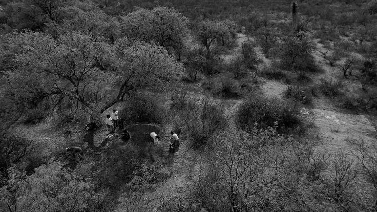

Ninguna señal confirma por sí sola la presencia de una fosa.
Observar nos ayuda a reconocer:

Si algo llama tu atención, no tengas miedo de compartirlo. Los colectivos de búsqueda reciben información y denuncias que pueden convertirse en nuevas pistas.
Más personas observando significan más posibilidades de encontrar.